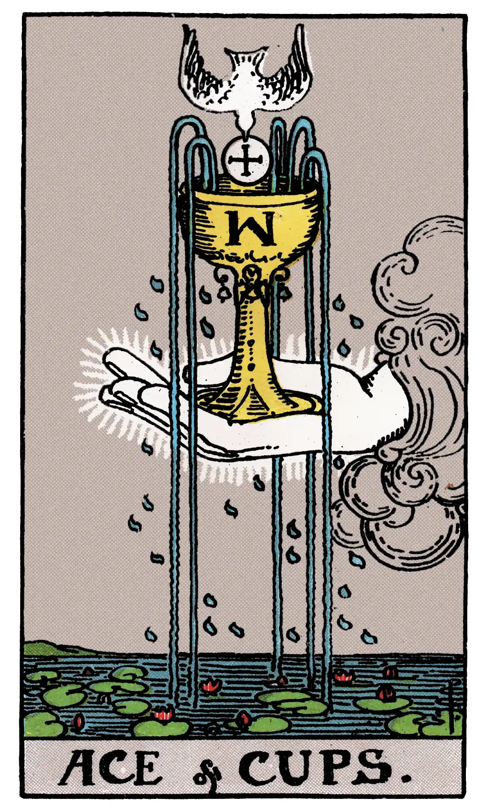

Ace of Cups

A.E.W.
Upright
House of the true heart, joy, content, abode, nourishment, abundance, fertility; Holy Table, felicity hereof.
Additionally
Inflexible will, unalterable law.
Recurrence
2 - Trickery.
3 - Small success.
4 - Favourable chance.
Reversed
House of the false heart, mutation, instability, revolution.
Additionally
Unexpected change of position.
Recurrence
2 - Enemies.
3 - Debauchery.
4 - Dishonour.
S.L.M.M.
Upright
Feasting, Banquet, Good Cheer
Reversed
Change, Novelty, Metamorphosis, Inconstancy.
Description
The waters are beneath, and thereon are water-lilies; the hand issues from the cloud, holding in its palm the cup, from which four streams are pouring; a dove, bearing in its bill a cross-marked Host, descends to place the Wafer in the Cup; the dew of water is falling on all sides. It is an intimation of that which may lie behind the Lesser Arcana.